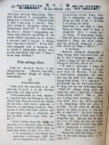

Languages
台文
｜
中文
｜
日本語
｜
English
字體
小
｜
中
｜
大
首頁
/
白話字數位典藏
白話字數位典藏全文檢索
查詢模式
選擇年代
清國時代(1885-1895)
日本時代(1895-1945)
戰後(1945-1969)
1885-1895
1896-1905
1906-1915
1916-1925
1926-1935
1936-1945
1946-1955
1956-1965
1966-1969
1970-1980
1980-1990
1990-2000
2000-2010
2010-
選擇文類
詩
散文
小說
戲劇
傳記
選擇作者
陳清忠
陳清義
編輯部
柯設偕
吳天命
明有德
偕叡廉
周天來
劉華義
王守勇
林茂生
陳添旺
王占魁
柯維思
賴仁聲
陳瓊琚
雪峰逸嵐
吳清鎰
郭水龍
蕭樂善
許水露
葉金木
陳金然
章王由
廖得
鄭連坤
潘道榮
楊士養
梁秀德
劉約翰
周淑慧
高金聲
林燕臣
黃六點
蔡愛義
許有才
主筆
巴克禮
陳鳩水
郭朝成
張基全
陳明清
陳能通
拾穗生
顏振聲
卓恆利
傳道局
胡文池
劉主安
鄭兒玉
Google Search
Yahoo Search
全部
刊名
標題
標題(教羅)
全文
全文(教羅)
作者
第105頁，共108頁(共2,148筆資料) 0.70905089378357sec
1
...
103
104
105
106
107
108
To Page
GO
文字列表
圖文列表
排序
日期
文類
刊名
作者
影像
[1926-10 芥菜子 文類-散文 作者-陳清忠/Tân Chheng-tiong ]
(3)
抵抗誘惑 [ Tí-khòng iú-he̍k ]
抵抗誘惑 咱人活佇這地上的中間，咱袂免得無試煉佮誘惑。 照約伯記內面所記，「人佇地上的生活酒惑的生活。」 所以逐人應該著警戒佇伊的誘惑，謹慎來祈禱，免得魔鬼利用機會來欺騙--伊；因為魔鬼無暝無日，四界揣所欲吞咬的人。 無人遐完全，遐神聖，通免受誘惑，免受魔鬼的攻擊。 雖然誘惑oh抵抗，尚且是悲慘，iáu-kú伊的利益是真大；因為人對誘惑會成謙遜，成清氣，閣再會得受訓練。 濟濟聖徒經過濟濟的試煉佮誘惑，來得著濟濟的利益。 袂堪得受誘惑的人，teh欲跋落佇自暴自棄的陷坑。 世間無有一所在夠額神聖通閃避誘惑佮逆境的襲擊，嘛無彼款的 ún-ka通bih。 有活命的中間無一人免受誘惑...
[1926-12 芥菜子 文類-散文 作者-陳清忠/Tân Chheng-tiong ]
(3)
閣活的力 [ Koh-oa̍h ê la̍t ]
閣活的力 保羅有看見主，主有顯現伊本身予保羅看見。伊的先輩，溫厚的君主巴拿巴有紹介這个迫害者，loān-bō͘ 的人Tāi-sò͘的掃羅，現時叫做保羅，予眾使徒，講伊佇路中有看見主，也主有佮伊講話。(使徒 9：27) 閣活的力的大，伊的強，若愛知，請看伊受召了後的一世人！這个力就是予對敵變做同僚，予怨恨變做疼的力lah！這个力就是予獅變做牛，予豺狼變做羊仔囝的力！ 若無閣活就無保羅，無保羅就無今旦日的異邦的教會；使徒行傳以下，新約的大部分也是無！！ 主的閣活，予萬人化做靈的閣活。肉體的閣活成做思想的閣活。－冷淡感情的閣活，化做強的意志的閣活。 I、閣活的力，予人信耶穌是上帝...

[1927-1 芥菜子 文類-散文 作者-陳清忠/Tân Chheng-tiong ]
(3)
桌上談 [ Toh-siōng-tâm ]
桌上談 以下所譯--的，是印度的大宗教家(Sat-hu Sun-tāi)。Sadhu Sundar Singh所講的斷片。 (I) 說教者。 「我欲寫說教的時，無坐teh，佇祈禱的詩來得著本文，題佮引例」。 「說教者所欲傳--的，應該著對上帝來受才著。設使伊若是對冊來得著，就毋是伊本身的福音，是別人的福音。彼款的說教者就是坐佇別人的卵的頂面來孵，也掠遐个卵做家己的」。 「聽的人靈的 (lêng-tek)所要求--的是啥物，我會感著，tú-tú是親像狗比學者較有鼻味的力」。 伊佇公會的面前欲說教的代先，著久久的中間內祈禱佮冥想，後來揀一句的聖言，也特別揀會合佇彼个時陣的...
[1927-2 芥菜子 文類-散文 作者-雪峰逸嵐/Soat-hong Iat-lâm]
(3)
基督的疼 [ Ki-tok ê thiàⁿ ]
基督的疼 (雪峰逸嵐) 請看這篇的朋友，未看的代先hian 羅馬 8：35－39來讀，紲詳細想，「Chī-chuī欲隔斷咱佇基督的疼？......阮為著你的緣故終日受死看做親像欲thâi的羊.........攏袂會隔斷咱佇上帝的疼。就是咱的主基督耶穌所有的疼」。 到底基督的疼佇佗位？按怎疼？按怎才欲疼咱？愛小可saⁿ-kap談論。 真神的救主無罪的耶穌刁工降世，出世就包佇冷 ki-ki 的幼布，睏佇tēng khok-khok 的馬槽，伊敢應該著按呢？無。是為著咱的罪。伊疼咱。 佇世間三十外年，食、睏袂照時，世間人毋信伊，反對伊，致到予伊悲傷啼哭佇耶路撒冷城外。伊毋限定為著...
[1927-2 芥菜子 文類-散文 作者-陳清忠/Tân Chheng-tiong ]
(3)
基督的無聊「孤單」 [ Ki-tok ê bô-liâu [ko͘-toaⁿ] ]
基督的無聊「孤單」 孤單有兩款：一款是為著家己的歹，致到予朋友無愛來，sak--伊的孤單；閣一款是為著想高尚，想好，平常的人oh得了解的因端，致到來無朋友的孤單。基督的孤單就是屬佇路尾這款。 天物的主，現時佇爸的厝，予千千萬萬的天使聖徒圍teh，無親像伊佇地裡的時的孤單。會了解伊的心肝，會知捌伊的精神，佮伊相佮講話，佮伊相佮歡喜，彼款的神靈拍算袂少。總是oa̍t頭看落來世間的時，記得伊做人的奴僕，予人拍，予人phuì涎的時，敢毋是猶原真孤單，真無聊mah！ 伊的目睭若看到圖利的巴黎、不信的北京的時，伊的心肝敢會得著慰安mah！人口幾若百萬的大都市；有拜堂、有說教，總是彼中間到底有幾个真...
[1927-3 芥菜子 文類-散文 作者-陳清忠/Tân Chheng-tiong ]
(3)
內面的生活 [ Lāi-bīn ê Seng-oa̍h ]
內面的生活 「上帝的國是佇恁的中間」。主有按呢講，獻你的全心予主，放sak這个罪惡的世間，就你的靈魂欲得著平安。 著學看輕外界的事物，也留心佇內界的事情，就恁會得曉悟上帝的國臨到佇恁(的中間)。 「因為上帝的國是和平，是對聖神來歡喜」。無清氣的人袂得通享受。 你若是備辦tú好的王位佇你的心內，基督就欲來揣你。也欲將伊的慰安賞賜--你。 所有伊的媠佮榮光攏是對心內發出，佇遐伊teh欲歡喜快樂。 靈tek 的人基督常常來訪問；若來逐擺有帶歡喜的話，快樂的慰安，滿滿的平和，尚且帶真通驚惶的友情來。 Ah篤信的靈魂，ah著備辦你的心肝來予這个新囝婿，伊穩當欲來揣--你，欲來踮佇你的內面...
[1927-3 芥菜子 文類-散文 作者-偕叡廉/Kai Jōe-liâm]
(3)
東西南北 [ Tang Sai Lâm Pak ]
東西南北 1、南美洲有8000萬人，內中一半較加毋捌字。In是天主教較濟。現時基督教有2000 个宣教師佇遐teh報揚主的福音。 2、通世界回回教的人數有兩億四千萬，較濟是佇印度國、阿非加、南洋、佮中國。佇遮濟人的中間只有24，0000人捌字nā-tiāⁿ。佇100 个中間只有五个人會曉讀。 3、回回教講世界自古以來才有五个先知。佇這五个中間只有耶穌基督無罪。伊一个有成聖。所以現時佇印度有濟濟青年心向佇主的教示。 4、美國北部長老教會舊年有募集 2400 萬銀。本國宣道會 800 萬，外邦宣道會 600 萬，教育部260 萬，ko͘-koáⁿ-hoē 180 萬，本國女宣道會 260 ...
[1927-4 芥菜子 文類-散文 作者-王守勇/Ông Siú-ióng]
(3)
教育的意義 [ Kàu-io̍k ê Ì-gī ]
教育的意義 這句教育若英語是講Education。這字的語言是對拉丁語的 Educare這字出來的。這字 Educare有兩款意思佇teh，就是照字爿E = o͘t (出來的意思)，ia̍h ducere = to lead (共伊引chhoā)。所以這字 Educare 的意思是共伊chhoā出來，講較明教育原來的意思是欲對囡仔的頭腦內所有的智識，用得當的法度共伊chhoā出來的意思。 這句Pädagogik 的德譯語是對希臘語彼字Paidag&o͘ml;gos來的。若用這字來共伊解破Paidoc = a boy，or a girl (囡仔的意思)，閣再ag&o͘ml;gos...
[1927-9 芥菜子 文類-散文 作者-雪峰逸嵐/Soat-hong Iat-lâm]
(3)
感觸 [ Kám-chhiok ]
感觸 (雪峰逸嵐) 讀前號的本報「我攻擊牧者羊群就四散」忽然閣再引起無限的憂愁，重拍起佇我的心內teh近感觸著一句。耶穌m̄-nā欲警戒當時的學生nā-tiāⁿ，也是欲警戒現時佮後代的基督徒。通講世間的廢無，這句話袂廢無。現是台灣教會的狀態，通講佮猶太末世(末世) 的風俗是差毋多--的，(=差無濟)現時濟濟人teh講基督教thài袂興？六十外年lah，信者猶真少。起初teh傳，成績hiah nī好，現時thài按呢？是啥原因？Ai-ah！強欺弱，欺貧重富，抱勢力，抱自高，強權壓迫無照公理，無顧大局，宛然是猶太的末世。為著按呢，無力的，軟chiáⁿ--的，愛欲活--的，就著穿運動鞋...
[1927-9 芥菜子 文類-散文 作者--/-]
(3)
教囝的法度 [ Kà kiáⁿ ê hoat-tō͘ ]
教囝的法度 (續接前號) 罰囡仔的時，毋通毋罰伊，早有兩國交戰，一國出兩隊兵，一隊予太子管，一隊予公爵管，到半路，太子的營內，一个兵偷the̍h人的物，共伊定死罪，公爵就替這个兵對太子講情。太子講，凡若偷the̍h人的物的，我的確無赦免伊，宮爵講，害ah，我的營內愛偷the̍h 的，一半較加，我攏赦免伊，若照你所講，kám毋是攏著定死罪mah。太子講，著，所以你的營內，犯著這个偷the̍h來受刑罰的真濟，我就毋是按呢，若患著的。的確著死，受這款的刑罰的，才真少，囡仔也是按呢，伊若知免受刑罰，的確逐項敢做這攏是對佇應該罰伊，毋罰伊的緣故。 也有一款囡仔做歹若看父母的面色，就知通改...
[1927-10 芥菜子 文類-散文 作者-陳清義/Tân Chheng-gī]
(3)
世界的結局 [ Sè-kài ê kiat-kio̍k ]
世界的結局 我有讀這本細本冊，Parker博士所著的，論起世界結局這層事，不止有你。這个世界實在真大，頂面是天，下面是地，袂會無起頭，也袂會無續尾。 這个問題科學家，宗教家，攏有辯論了，逐个攏集in所講--的；總是照基督教聖經所記載，這个天地萬物，以及地球上的人群，或是空中的世界，宇宙間的日，月，星辰，無毋是上帝所創造的。經過hiah濟年星辰，地球的運行無煞，萬物的生活佇彼个中間，對在早到這霎，這个是世界的起頭，真明。既然有起頭自然的確有路尾，所以世界結局的問題，是人類所著研究的材料，總是這个代誌體真大，設使若毋是上帝的啟示，kan-ta倚靠人的智識來推測無法得。聖經是上...
[1927-10 芥菜子 文類-散文 作者--/-]
(3)
教囝的法度 [ Kà kiáⁿ ê hoat-tō͘ ]
教囝的法度 第四章 誠實 講白賊的過失。囡仔第一快犯著。東爿chiah的國的人民。攏掠講白賊無要緊無傷害，反轉笑老實的人是戇人，所以人民自己卑賤有甚物奇怪ah，上古的人就毋是按呢，早有希臘的人到印度遊歷。倒轉來本國了後，呵咾印度的人誠實。按呢通顯明古早東爿的人也有對重誠實。Taⁿ就對反，總是官府常常嚴嚴刑罰in，逼in著老實認。到尾也是用白賊來應，按呢彼个害毋是小可，要緊著綴上古的腳步來行，早波斯王tiàm佇Ló͘-sū。猶大問伊所學的，甚物是第一。波斯王應講，誠實做第一，按呢做父母的人。著緊用這个誠實教示伊的囝兒，盡力除去這號白賊的歹風俗。身軀做法度代先去行是第一要緊，東爿c...
[1927-5 芥菜子 文類-散文 作者-陳清忠/Tân Chheng-tiong ]
(3)
基督怎樣比念佛較贏？ [ Ki-tok cháiⁿ-iūⁿ pí Liām-hu̍t 念佛 khah-iâⁿ? ]
基督怎樣比念佛較贏？ 日本基督教會有一个牧師名叫Ku-kok (亀谷)。伊是本源寺的教祖蓮如上人的地18 代孫。伊對細漢到大學卒業，拍算欲承接祖先的職，來做和尚，伊的卒業論文也是關係佇彼方面的研究，-就是研究念佛信仰的大乘者善導大師的 su。總是真奇怪，伊受恩典的手的揀召，斷然脫出和尚的職來做牧師；雖然有受內外的迫害真傷重，iáu-kú無離開伊的本所在，專心佇遐宣傳基督的道理。 伊所發行的雜誌「十字架」有一chām teh論頂面的問題；人若teh袂了解基督教佮佛教的優劣（iu-loat），讀這chām 會通做真好的參考。 伊按呢講： 「念佛是通感謝，這是釋迦的教示；七高僧有信念佛；C...
[1927-6 芥菜子 文類-散文 作者-陳清忠/Tân Chheng-tiong ]
(3)
真的工程 [ Chin ê Kang-tiâⁿ ]
真的工程 傳道者Ko-lân。(Conant)佇「個人傳道」雜誌的內面，有講起，幾若年前，有一个女宣教師，寫一篇chhiam-hoé 的文，落佇「世界宣道論評」的事。 彼个女宣教師按呢講：- 「我捌鼓舞一个大的集會，也我有滿滿的熱心，愛予這个會得著大的成功。開會彼日，我的老爸，做委員來欲出席，佮我坐佇旅館的食堂長。伊用共鳴的心，聽我說明，這个會的特色以及將來欲得著的盛況。我歇睏teh喘氣的時，我的老爸àⁿ伊的身軀近倚我，目睭看佇這个phâng菜的人，共我講。查某囝，我想佇遐彼个大漢給仕káⁿ會接納耶穌基督。我捌常常佮伊談論，論伊的靈魂的事」。 我為著計畫這个大的集會，我的無閒差不多親...
[1927-6 芥菜子 文類-散文 作者-偕叡廉/Kai Jōe-liâm]
(3)
活活埋 [ oa̍h-oa̍h tâi ]
活活埋 Nî牧師去佇印度傳教濟濟年久。轉去英國的時，一位朋友對伊講，Nî牧師你佇印度的時常常拄著風險的事，請你講淡薄分阮聽。Nî牧師講，好，我講淡薄。我佇印度的時，捌踮佇喜馬拉山的山跤。佇彼所在有不止濟西藏人帶物來táu換，因為西藏是印度的隔壁國。我也學淡薄西藏的土音，後來紲會曉傳道理予in遮的人聽。遮个人平素是佛教，不止對重西藏的活佛。 有一日我tú-teh傳道理的時，忽然聽見一个西藏人teh叫我。伊講伊的老爸破病真傷重teh欲死，愛我緊去安慰伊，紲傳主的福音予in聽。我就佮伊做陣去。佇路中有4个西藏人也佮我做陣行。到阮入佇西藏國的地界，這幾人隨時出手共我掠，紲用索仔縛我。後來拖我...
[1927-6 芥菜子 文類-散文 作者-陳瓊琚/Tân Khêng-ku]
(3)
論佇家庭中祈禱的力 [ Lūn tī Ka-têng-tiong Kî-tó ê La̍t ]
論佇家庭中祈禱的力 論做老母的人彼个責任實在是真大。所以若無得著上主的幫贊，的確無向望會成就做老母彼个重大的使命。上帝佇耶利米33：3，有應允講，「你求我，我的確應，指示你本事，神的奧妙袂測度，恁未捌聽見」。所以親像teh指揮大家族的老母，有時的確有彼款盡oh得辨理的家內事，所以做老母的人的確著欠用料理家內，得當的才情。因為有時著用智識、吞忍、疼痛佮同情等等，就是照彼時彼時所著欠用的法度，因為有是定著會拄著真oh得設法的所在。親像佇這款oh設法的時陣，老母心肝著清靜，也著謹慎本身的舉止行動，閣著不時用對主來祈禱，因為伊是gâu體貼軟弱的，gâu幫贊人的，閣是gâu 慰安佮gâu賞賜智識予人...
[1927-6 芥菜子 文類-散文 作者-雪峰逸嵐/Soat-hong Iat-lâm]
(3)
兒童欄上帝的guâ [ 兒童欄 Siōng-tè ê gâu ]
兒童欄 上帝的 gâu。 (雪峰逸嵐) 通疼的囡仔兄、囡仔姊。我佇舊年11月第 10號，有佮恁講一項事，恁會記得袂？若袂記得，著hian第 10號的 「芥菜子」就連鞭會想著，就是智識的源頭，我有講欲閣講予恁聽因為有濟濟代誌，也去廈門，閣過來猶原未有時間通kia̍h筆，總是真掛心，對恁真失禮，今無要緊，請赦免，chím-moá欲閣佮恁講lah。 今欲佮恁講啥物？請你拜託恁阿娘，恁阿姊讀15號的本報。「造化的奧妙」予恁聽，紲解說較淺較明，恁才聽會曉，(也請有心佇兒童宗教教育的爸母，歡喜佮恁的囝兒談論)。 囡仔兄、囡仔姊。恁信mah？敢有影萬物是上帝創造--的？有人講，萬物是盤古 kia...
[1927-6 芥菜子 文類-散文 作者-張基全/Tiuⁿ Ki-choân]
(3)
砂糖製造工業 [ Soa-thn̂g chè-chō kang-gia̍p ]
砂糖製造工業 (張基全) 糖的歷史：-古早人欲得著甜的味，是對食逐款的果子佮食蜂蜜來得著，了後才知影講對甘蔗會通得著糖。 今到底這項甘蔗第一起頭是佇啥物所在發生，咱無確實的證據歷史通予咱知。有人傳說講是中國第一早有，總是照歷史所記載。Herodotus (ロドタスヘ)時代就是主前327年亞力山大王拍印度國的時東印度就有the種甘蔗，總是彼時種甘蔗是欲做神佛的祭物，抑是做藥，抑是做食的路用，猶袂曉製糖的法度。到紀元 500外年的時才會曉製糖，所以有人講印度國是甘蔗佮糖的起源地，後來傳去波斯阿拉伯，彼時伊的名是叫做Saccharum (サツカラム)後來有運去希臘、羅馬，彼時是叫做印度鹽，價...
[1927-7 芥菜子 文類-散文 作者-陳清義/Tân Chheng-gī]
(3)
重頭生的要緊 [ Têng-thâu-siⁿ ê iàu-kín ]
重頭生的要緊 約翰3章3節。 耶穌佇世間的時。有一个猶太的官吏名叫Nî-ko-tì-bú，暝時來就近伊。主耶穌用重頭生要緊的道理來教示伊，佇聖經的中間，教示人的道理有真濟；總是會入人的耳空，動人的心肝，無毋是這款。按呢這款的道理，正是救世的良言，也是人生必要的大問題。主耶穌講出這款的道理，不但關係Nî-ko-tì-bú，也關係佇咱大家。怎樣號做重頭生。 重頭生毋是人的重出世，就是jîn-lêng 的新生，因為人的罪惡深重，雖罔活，親像死，逐个著洗心悔罪，改惡遷善，出力除去舊時所染著的污穢，來進行自新的路，親像死的閣活，按呢號做重頭生。 按呢這个重頭生的道理真大要緊，是做咱人所向望來世...
[1927-7 芥菜子 文類-散文 作者-陳添旺/Tân Thiam-ōng]
(3)
我攻擊牧者羊群就四散 [ Goá kong-kek bo̍k-chiá iûⁿ-kûn chiū sì-soàⁿ ]
我攻擊牧者羊群就四散 馬太26：31；可 14：27，撒迦利亞13：7。 這句話啥物人講的？耶穌。啥物時講的？欲臨難的時講，來警戒學生。啥事按呢講？是愛引先知撒迦利亞得著上帝默示的預言；代先指明彌賽亞欲臨到，後來果然有。紲受人攻擊來成神的旨意。伊的學生欲四散逃走。 毋但指學生四散，也指猶太boa̍t-kéng的時，百姓欲拄著災殃，欲滅無，到三份的兩份，留 teh 的一份是遐的誠實的。因為這个先知是，當猶太欲boa̍t-tiâu 的時代。彼時風俗真腐敗，強的欺負軟弱的，大食細，欺貧重富；有高位的貪心，受人的布賂(有錢者，無錢者死)。 無照公理teh行做，欺負sàn-hiong人，致到有...
第105頁，共108頁(共2,148筆資料)
1
...
103
104
105
106
107
108
To Page
GO
數位典藏國家型科技計劃
拓展台灣數位典藏計畫
版權所有 國立台灣師範大學 台灣文化及語言文學研究所©2008
10610 台北市和平東路一段162號│TEL 02-7734-5516│Fax 02-2358-2461
計劃簡介
典藏特色
執行架構
計畫典藏數位化流程
成員介紹
台灣白話字發展簡介
巴克禮牧師與《台灣教會公報》
廈門話字典-杜嘉德
白話字教學-打馬字
中國南方白話字發展
台灣基督教長老教會簡表
台灣基督教長老教會教會歷史委員會
《北部台灣基督長老教會教會ê歷史》
關於陳清忠
白話字文學：台灣文學的早春